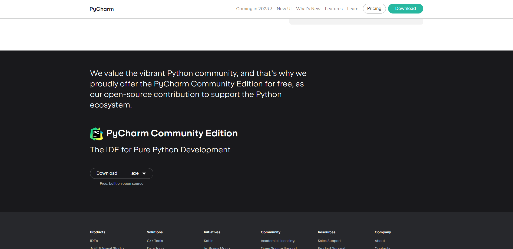

Technical Description
JetBrains Pycharm: A Brief Overview
Integrated Development Environments (IDEs) emerged in the late 1970s and early 1980s to streamline software development by combining essential tools into one platform. One of the earliest IDEs was Turbo Pascal in 1983. PyCharm, developed by JetBrains for Python programming, is a more recent IDE which first came out in 2010, reflecting the continuous evolution and specialization of IDEs. PyCharm is one of the most popular and industry leading Python integrated development environments (IDE). As you will learn in this guide, IDEs are inherently popular amongst novices and professionals alike because of the encapsulation (putting many tools and features into one place) that they provide. By the end of this guide we will know how to:
Feel free to click on any of the checklist buttons above to skip to the corresponding part of this article if you already have knowledge about some of the topics discussed, let's begin!
Pycharm: Getting Started
Installing PyCharm
To install PyCharm we need to visit the PyCharm website and go to the downloads section. The first download button we see is for Pycharm Professional which requires a license to be used. This version of PyCharm has more workplace features and is not free. We want to download the free community version of PyCharm, to download the community version simply scroll to the bottom of the webpage and find "Pycharm Community Edition".
Here we can download the free version of PyCharm. Notice the OS/Platform selection at the top of the page. Select your corresponding operating system. Note: Silicon Mac users (M1/M2 chips) need to select the dropdown arrow on the right and select "Apple Silicon" installer if you do not do this you may experience performance issues.
Once downloaded run the installer on your system and follow along with the installation wizard to guide you through the installation process.
Set Up a New Project
To begin a new project lets launch PyCharm, you will be greeted with the following screen.
To create a new project click the "New Project" button. A new screen will flyout and here we can configure our type of project. For our advanced users let's briefly step through what each setting does. If you are new to this you can generally just click the "Create" button as the default configuration will already work.
Lets shift our attention to the left side of the project creation. Here we can see a list of preconfigured projects for various frameworks. Clicking on one of these options will allow you to quickly create a project of that type and PyCharm will handle the installation of extra dependencies and packages. In this guide we will configure a simple pure python project, so lets click the "Create" button.
Setting Up Virtual Environments and Dependencies
Let's learn how to configure project dependencies in PyCharm. Python is a versatile all purpose programming language meaning we can use it for things as simple as desktop or web automation or more complex things like web servers or machine learning. The key to unlocking these capabilities are project dependencies.
When we want to spin up a web server it's considered bad practice to implement that code by yourself because there could be vulnerabilities in your approach. As programmers we try not to reinvent the wheel, so we simply import libraries/packages to get safe, reliable, and maintained code, we then use the APIs (application programming interface) that the library provides to use their code. To import these dependencies we need to install them from the internet and that is what PyCharm makes easy.
Let's look at how to setup some project dependencies in PyCharm:
- Click your python environment in the bottom right of the IDE, it has your python version listed.
- Now click "Interpreter Settings" and you will get the following screen.
- If we click on the plus highlighted in red in the above picture we will be able to search for the python package we want. Let's install numpy a python library essential for all things data science. Click the "Install Package" button.
That's it! Let's navigate back to the text editor and use our package. In the editor we use the "import" keyword to import our numpy package then we can optionally alias it by using "as np" to make it easier to type. Then through the np keyword we now have access to the package code for numpy.
Debugging Code
Let's learn how to use the built-in code debugger in PyCharm.
Suppose we have some code with an error such as the picture below let's walkthrough how we can use the debugger to gain insight on why our code isn't working.
To use the debugger we need to set a breakpoint in the code. A breakpoint is where the execution of the program will pause and wait for us to step through it manually so we can examine the state of the program and see whats going on. You can think of breakpoints like in a movie or TV show when there is something you want to see closely frame by frame. So you would pause your show with the remote and spam pause and play to see it play out in slow motion, this is the same concept as a breakpoint.
We can set a breakpoint by clicking on the left margin of the code lines in the text editor. When a breakpoint is set you will see a red dot on that line. After setting the break point click the debug button.

When we click the debug button we open the debugger view in the bottom portion of the window, here we are provided with buttons that will allow us to move through our code line by line, we are also shown relevant variable names.
Here is what they do:
- Step Into: Enters the method or function about to be executed.
- Step Out: Exits the current method or function, returning to the caller.
- Step Over: Advances to the next line in the same function, skipping called methods.
- Step into My Code: Like "Step Into", but avoids library or non-user code.
- Run to Cursor: Executes code until the line where the cursor is placed.

Aha! So as we stepped through the code the debugger showed us that array counting starts at 0, meaning we weren't printing "A" because we skipped it by starting the print at position 1. So, we received the error because position 4 doesn't exist in this array, it's out of bounds. Now we can correct our code and move on.